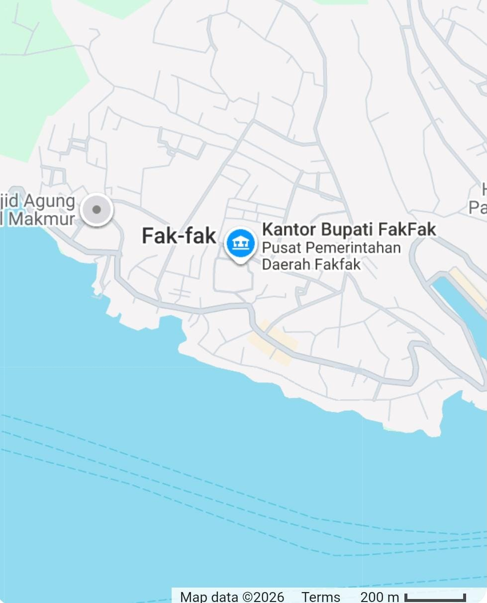

Hubungi kantor atau posko piket Satuan Polisi Pamong Praja Kabupaten Fakfak untuk informasi layanan, koordinasi, maupun bantuan darurat.
Jl. Dr. Salasa No. 01, Kabupaten Fakfak, Papua Barat
(0956) 22411 / Unit Reaksi Cepat 24 Jam
satpolpp@fakfakkab.go.id
Senin – Jumat, 08:00 – 16:00 WIT (Posko Patroli & Damkar Siaga 24 Jam)
